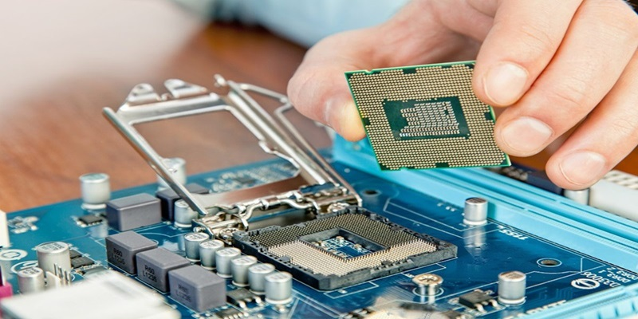
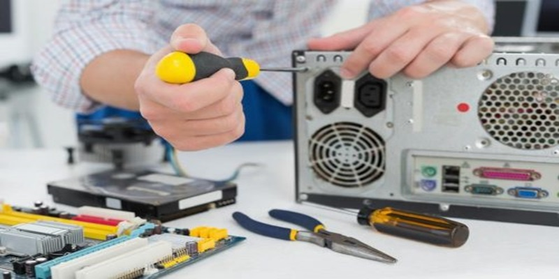

Softwares
Software é um agrupamento de comandos escritos em uma linguagem de programação. Estes comandos, ou instruções, criam as ações dentro do programa, e permitem seu funcionamento.Cada ação é determinada por uma sequencia, e cada sequencia se agrupa para formar o programa em si. Estes comandos se unem, criando um programa complexo.
Um software, ou programa, consiste em informações que podem ser lidas pelo computador, assim como seu conteúdo áudio-visual, dados e componentes em geral. Para proteger os direitos do criador do programa, foi criada a licença de uso. Todos estes componentes do programa fazem parte da licença.
Hardwares
Hardware é todo componente físico, interno ou externo do seu computador, ou celular, que determina do que um dispositivo é capaz e como você pode usá-lo. Embora dependa de um software para funcionar (e vice-versa), o hardware é um elemento a parte e igualmente importante.
Hardware é todo e qualquer componente ou equipamento físico, tanto dentro quanto fora da Tecnologia da Informação. De uma maneira geral, qualquer máquina, ferramenta ou utensílio, de uma máquina de fresa a uma chave-inglesa, passando pelo seu celular ou computador é um hardware. Talheres, peças, dobradiças, engrenagens, parafusos, chips, processadores, tudo isso é hardware.
Consultorias
À medida que o tempo passa novas tecnologias vêm surgindo, o que impacta a vida das pessoas e, sobretudo, das empresas. Com o aparecimento de tantas novidades, empresários e gestores devem estar sempre atentos a implementá-las de forma eficaz. É justamente nesse momento que entram em destaque os benefícios que uma consultoria em TI pode proporcionar aos negócios.
Infraestrutura de Redes
A interligação entre computadores e pessoas, bem como a conexão com a internet e a possibilidade de virtualização. Essas são características comuns de qualquer empresa hoje e são garantidas por uma boa infraestrutura de rede.
A rede corporativa depende, sobretudo, de uma série de equipamentos que cumprem uma função específica dentro de uma malha de conexões. Organizar tudo isso pode ser um desafio, mas não quando se tem uma boa visão da estrutura.